|
|
-
Advancing Open Science with Version Control and Blockchains
- Jonathan Bell, Thomas D. LaToza, Foteini Baldmitsi and Angelos Stavrou
- SE4Science 2017: International Workshop on Software Engineering for Science
- Offers an agenda for using blockchains to guarantee end-to-end integrity
of scientific data and results while supporting collaborative research.
- workshop paper
doi,
preprint
|
|
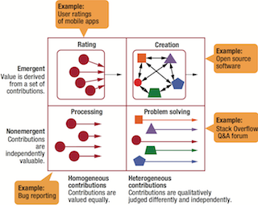
|
-
Crowdsourcing for Software Engineering
- Klaas-Jan Stol, Thomas D. LaToza, Christian Bird
- IEEE Software, March-April 2017
- Explores the nature of crowdsourcing and the impact of crowdsourcing
on software engineering.
- article
doi,
preprint
|
|
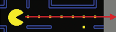
|
-
Programmers Are Users Too: Human-Centered Methods for Improving Programming Tools
- Brad A. Myers, Andrew J. Ko, Thomas D. LaToza, YoungSeok Yoon
- IEEE Computer, July 2016
- Describes human-centered methods that can help researchers better understand and
meet programmers' needs and illustrates the methods with experience drawn
from their application to the design of developer tools.
- refereed article
doi,
preprint
|

|
- Crowdsourcing in Software Engineering: Models, Motivations, and Challenges
- Thomas D. LaToza and André van der Hoek
- IEEE Software, Jan/Feb 2016
- Explores the models of crowdsourcing that have been applied to software development to
date, explores forces driving the adoption of crowdsourcing, and articulates a series of challenges that must be overcome for
crowdsourcing software development to reach its potential.
- refereed article
doi,
preprint
|
|
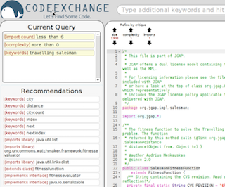
|
-
CodeExchange: Supporting Reformulation of Internet-Scale Code Queries in Context
- Lee Martie, Thomas D. LaToza, and André van der Hoek
- ASE 2015: International Conference on Automated Software Engineering
- Introduces an online system for code search incorporating context and query reformulation
and provides evidence for its value through a laboratory study and field deployment.
- full paper (acceptance rate: 21%)
doi,
Try it out!
|

|
- Ask the crowd: scaffolding coordination
and knowledge sharing in microtask programming
- Thomas D. LaToza, Arturo Di Lecce, Fabio Ricci, W. Ben Towne, André van der Hoek
- VL/HCC 2015: Symposium on Visual Languages and Human-Centric Computing
- Introduces a system for explicitly coordinating and sharing
knowledge by asking, answering, and discussing questions about design decisions
in code and reports evidence from a 30 hr crowd programming session.
- short paper
doi,
local pdf
|

|
- A vision of crowd development
- Thomas D. LaToza and André van der Hoek
- ICSE 2015: International Conference on Software Engineering, NIER Track
- Provides a research agenda for crowd development, outling challenging
in applying microtasking to software development work and potential
avenues for solutions.
- short paper (acceptance rate: 18%)
doi,
local pdf
|
|
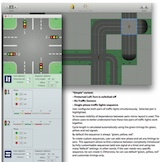
|
- Borrowing from the crowd: a study of
recombination in software design competitions
- Thomas D. LaToza, Micky Chen, Luxi Jiang, Mengyao Zhao,
and André van der Hoek
- ICSE 2015: International Conference on Software Engineering
- Reports findings from an architecture and user experience design
competition, examining where and how borrowing ideas from other designs
helps to improve software designs.
- full paper (acceptance rate: 19%)
doi,
local pdf,
materials and data
|
|
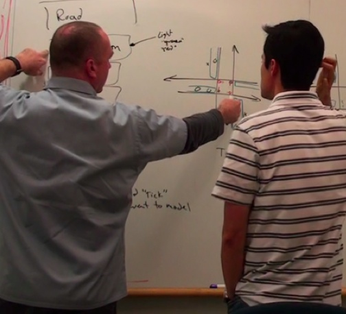
|
- How software designers interact with
sketches at the whiteboard
- Nicolas Mangano, Thomas D. LaToza, Marian Petre, and André van der
Hoek
- TSE: Transactions on Software Engineering, Feb 2015
- Using a manually coded dataset of 4,000 sketch-related events, examines
how sketches support informal design 'in the moment' through an
analysis of the relationships between sketches and the reasoning
activities they help to enable.
- journal article
local pdf,
doi,
materials and data
|

|
- A practical guide
to controlled experiments of software engineering tools with human
participants
- Andrew J. Ko, Thomas D. LaToza, and Margaret M. Burnett
- ESE: Empirical Software Engineering, Feb 2015
- Provides guidance on practical aspects of experimental design, grounded
in a systematic literature review of tool evaluations that were
published in over 1,700 software engineering papers published from 2001
to 2011.
- journal article
doi,
preprint
|
|
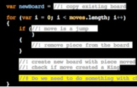
|
- Harnessing
the crowd: decontextualizing software work
- Thomas D. LaToza, W. Ben Towne, and André van der Hoek
- CSD 2014: International Workshop on Context in Software Development
- Explores how organizing software work into self-contained, low-context
microtasks opens new opportunities for software development.
- workshop paper
local pdf
|

|
- Microtask programming: building software with a crowd
- Thomas D. LaToza, W. Ben Towne, Christian M. Adriano, and André van der Hoek
- UIST 2014: Symposium on User Interface Software and Technology
- Introduces an approach for programming through microtasks and presents
CrowdCode, an online IDE for microtask programming.
- full paper (acceptance rate: 22%)
local pdf,
doi,
youtube,
slides
|
|
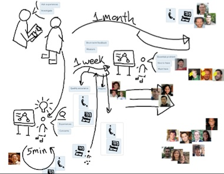
|
- Supporting informal design with interactive whiteboards
- Nicolas Mangano, Thomas D. LaToza, Marian Petre, and André van der Hoek
- CHI 2014: Conference on Human Factors in Computing Systems
- Identifies 14 behaviors to support in informal design at the whitebord,
and reports on three field deployments of an interactive whiteboard
conducted to undersand the opportunities and challenges in supporting
informal design.
- full paper (acceptance rate: 23%)
local pdf,
doi,
youtube,
github
|

|
-
CrowdCode: a platform for crowd development
- Thomas D. LaToza, Eric Chiquillo, W. Ben Towne, Christian M. Adriano,
and André van der Hoek
- CrowdConf 2013
- Introduces CrowdCode, an online IDE platform for crowdsourcing software
development, and surveys an approach for decomposing programming tasks
into self-contained, parellelizable microtasks.
- abstract
local pdf,
pdf in Portugese,
slides,
poster
|

|
- Crowd development
- Thomas D. LaToza, W. Ben Towne, André van der Hoek, and James D. Herbsleb
- CHASE 2013: Workshop on the Cooperative and Human Aspects of Software Engineering
- Provides a vision for a new software development process incorporating
microtasking, potentially enabling software to be built dramatically
faster through higher parallelism and small contributions by casual
participants.
- workshop paper
local pdf,
doi
|

|
- A study of architectural decision practices
- Thomas D. LaToza, Evelina Shabani, and André van der Hoek
- CHASE 2013: Workshop on the Cooperative and Human Aspects of Software Engineering
- Reports findings from interviews of developers on their architectural
decision practices. Results suggest that architectural decisions are
often technology decisions and are sometimes revisited, causing
software rewrites, following the discovery of an Achilles’ heel.
- workshop paper
local pdf,
doi,
poster
|

|
- Enabling a classroom
design studio with a collaborative sketch design tool
- Dastyni Loksa, Nicolas Mangano, Thomas LaToza, and André van der Hoek
- ICSE 2013: International Conference on Sofware Engineering, Education Track
- Reports findings from a deployment of a distributed interactive
sketching tool - Calico - in a software design studio course. Results
suggest that Calico enables students to work effectively in teams on
design problems and quickly develop, refine, and evaluate designs.
- full paper (acceptance rate: 27%)
doi
|
|
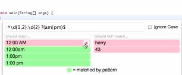
|
- Active code completion
- Cyrus Omar, YoungSeok Yoon, Thomas D. LaToza, and Brad A. Myers
- ICSE 2012: International Conference on Software Engineering
- Introduces Graphite, an IDE plugin providing interactive and
highly-specialized code generation interfaces through code completion.
Reports survey and lab study data on the contexts in which such a
system could be useful.
- full paper (acceptance rate: 21%)
local pdf,
doi,
youtube,
project website,
github
|

|
- Answering Reachability Questions
- Thomas D. LaToza
- Dissertation, Carnegie Mellon University
- dissertation
local pdf,
CMU tr
|

|
- Designing useful tools for developers
- Thomas D. LaToza and Brad A. Myers
- PLATEAU 2011: Workshop on the Evaluation and Usability of Programming Languages and Tools
- Describes a user-centered design process for creating useful tools for
software developers, outlining approaches to identify and understand
the context and frequency of an important problem, design a solution,
and evaluate its effectiveness.
- workshop paper
local pdf,
doi
|
|
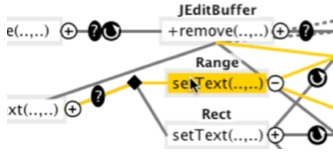
|
- Visualizing call graphs
- Thomas D. LaToza and Brad A. Myers
- VL/HCC 2011: Symposium on
Visual Languages and Human-Centric Computing
- Introduces Reacher, an IDE plugin supporting code investigation. Lab
study results suggest Reacher enables developers to answer reachability
questions faster and more successfully.
- full paper (acceptance rate: 33%)
local pdf,
doi
|

|
- Hard-to-answer questions about code
- Thomas D. LaToza and Brad A. Myers
- PLATEAU 2010: Workshop on the
Evaluation and Usability of Programming Languages and Tools
- Reports results from a survey of hard-to-answer questions developers
ask, revealing 94 questions across 24 categories, many of which are not
addressed by exisiting SE tools.
- workshop paper
local pdf,
doi
|
|
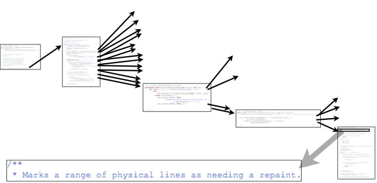
|
- Developers ask reachability questions
- Thomas D. LaToza and Brad A. Myers
- ICSE 2010: International Conference on Software Engineering
- Reports results from three studies examining challenges investigating
code. Results suggest developers can spend tens of minutes answering a
single question, get lost and disoriented, and erroneously make
assumptions that result in bugs.
- full paper (acceptance rate: 14%)
local pdf,
doi
|
|
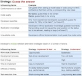
|
- On the importance of
understanding the strategies that developers use
- Thomas D. LaToza and Brad A. Myers
- CHASE 2010: Workshop on
Cooperative and Human Aspects of Software Engineering
- Motivates understanding developers strategies to identify opportunities for novel
developer tools and examines several common strategies in programming tasks.
- workshop paper
local pdf,
doi
|

|
- Questions about object structure
during coding activities
- Marwan Abi-Antoun, Nariman Ammar, and T. LaToza
- CHASE 2010: Workshop on
Cooperative and Human Aspects of Software
Engineering
- Reports data from observations of developers performing maintenance
tasks. Identifies typical questions about object structure, examining
their frequency and context.
- workshop paper
local pdf,
doi
|
|
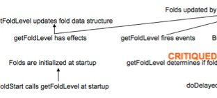
|
- Program comprehension as fact finding
- Thomas D. LaToza, David Garlan, James D. Herbsleb, and Brad A. Myers
- ESEC/FSE 2007: European Software Engineering
Conference and the Symposium on the Foundations of Software Engineering
- Reports results from observations of complex maintenance tasks.
Describes a model of program comprehension and reports findings on the
benefits of development experience.
- full paper (acceptance rate: 17%)
local pdf,
doi
|
|
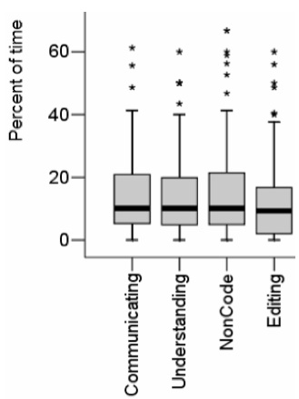
|
- Maintaining Mental Models: A
Study of Developer Work Habits
- Thomas D. LaToza, Gina Venolia, and Robert DeLine
- ICSE 2006: International
Conference on Software Engineering, Experience Track
- Reports results from surveys and interviews of professional software
developers. Results reveal developers' use of tools, perceived
problems, and practices involving code ownership, rationale, code
duplication, and interruptions.
- full paper (acceptance rate: 18%)
local pdf,
doi
|
|
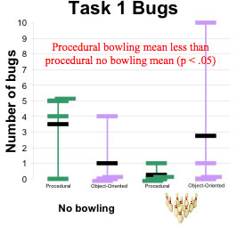
|
- Understanding and modifying
procedural versus object-oriented programs: where does domain knowledge
help more?
- Thomas D. LaToza and Alex Kirlik
- Cognitive Science 2004: Annual
Meeting of the Cognitive Science Society
- Experimentally tests if work with OO code benefits more from domain
knowledge than work with procedural code. Results suggest domain
knowledge benefits work with procedural code, rather than OO code.
- poster
local pdf,
conference pdf
|